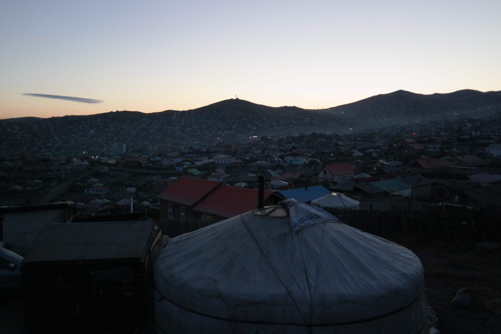
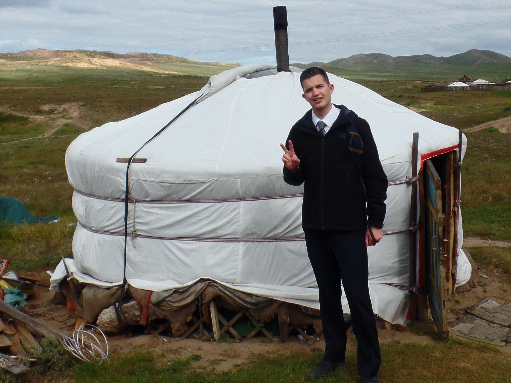
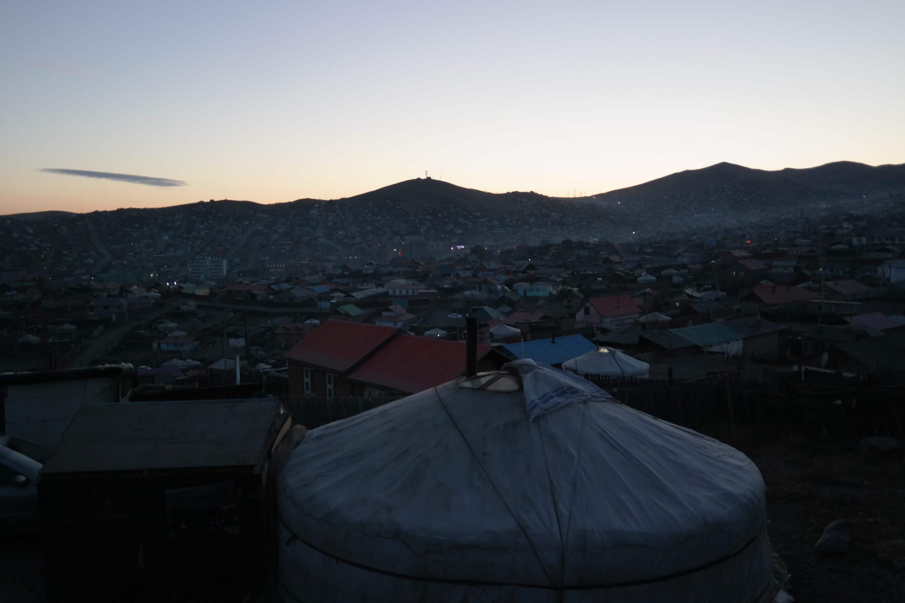
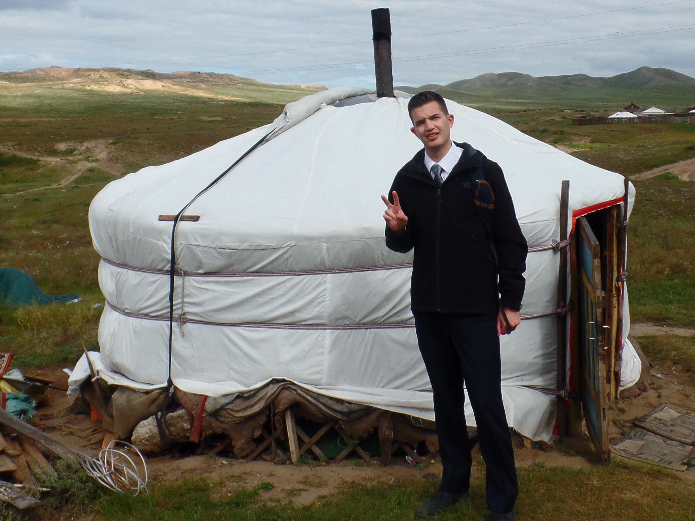

The Monogolian Home
Home Life
The Mongolian home is the center of the Mongolian lifestyle. If somebody wants to understand Mongolia better, they must visit a Mongolian home. Mongolian homes are traditionally and most commonly found as Gers (yurts) which are small tent-like structures. These structures are usually small and you have to duck down low in order to enter the front door. Here are some general rules to follow when it comes to being in a Mongolian Ger: The new guest Person entering has to come in the ger first If you trip on the door frame walking in, it means the family will have a lot of good things. If you trip while walking out, someone important or something important will be lost or a bad thing will happen. If you accidentally do this, you walk back in and grab a piece of wood next to the stove. Then, place it into the stove. If you do this the bad stuff won't happen. Never walk out of the house with a bag on your back. Hold it beside you when you exit. If you have the bag on, it means. Never walk through the center columns in the Ger. All ger doors face down south towards China. Looking down on them. If you go to a ger that had nobody, you can make yourself some food just be sure to clean up and leave a gift Nevertalk through a ger door!
 


